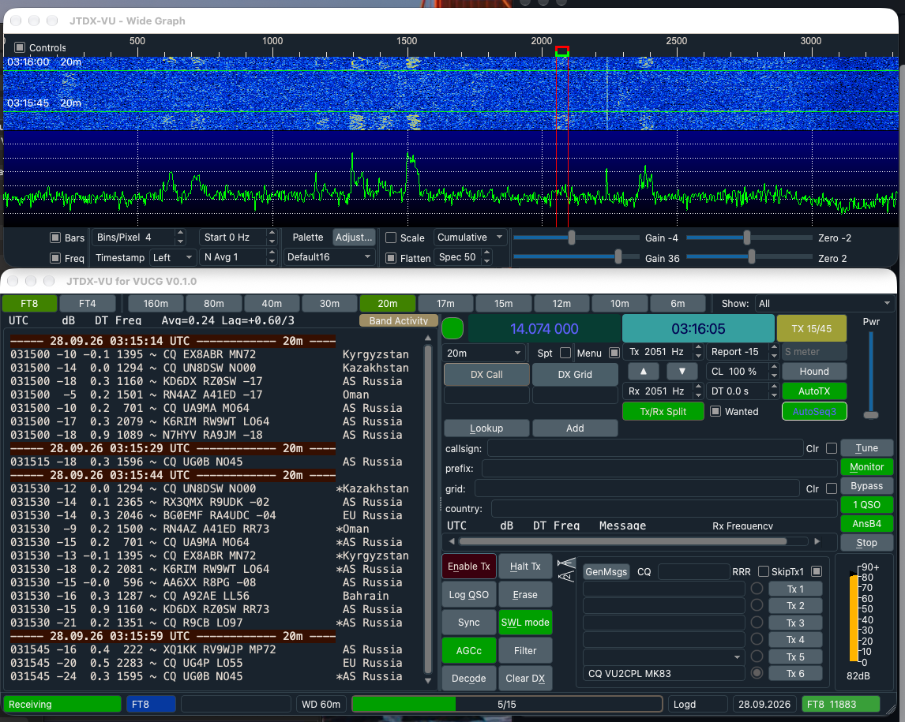
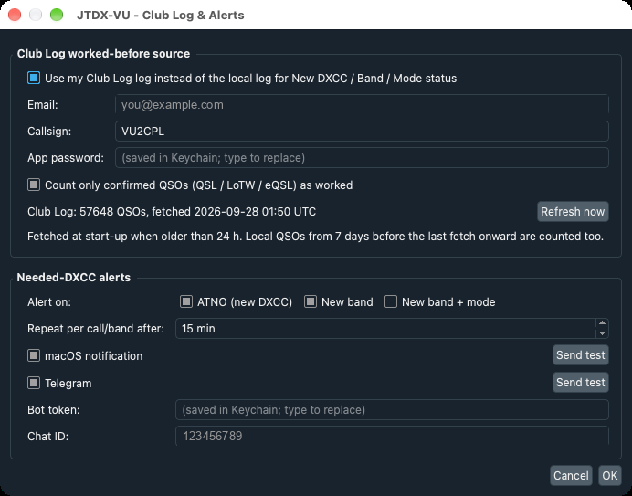
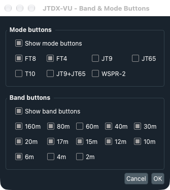

JTDX-VU — JTDX for the VUCG community
JTDX-VU is a build of JTDX 2.2.159 for the VUCG community, packaged natively for macOS (Apple Silicon and Intel), Windows x64 and Raspberry Pi / Linux (arm64 .deb). It installs next to a stock JTDX as its own app, with its own settings and data. On first launch it copies an existing JTDX setup across, so callsign, audio, rig and logs carry over.
Club Log DXCC status. JTDX's New DXCC / New band / New band+mode colouring normally reflects only the QSOs JTDX itself logged. JTDX-VU can take the whole log from Club Log instead, so every contact made with any program counts. It can also count only QSOs confirmed by QSL, LoTW or eQSL, which keeps worked-but-unconfirmed entities showing as needed. The log is refreshed at start-up, and QSOs made since the last refresh still count, so a station just worked doesn't light up again.
Needed-DXCC alerts. When a decoded station is an ATNO, a new band or a new band+mode, JTDX-VU raises a desktop notification and/or sends a Telegram message, with a per-station cooldown. Show only new trims the Band Activity pane down to stations still needed, while traffic with your own call and your QSO partner always shows.
One-click band and mode buttons above the decode panes, after the MSHV switcher: the current band and mode light up green, and a band button tunes to the mode's standard frequency. Also a shorter title bar, a Settings dialog that no longer squashes on macOS, and no focus-stealing when a new DXCC decodes.
JTTY and FT2 (v0.3.0). JTTY is WSJT-X 3.2’s period-free, RTTY-style keyboard mode, ported from 3.2.0-rc1: it decodes continuously, transmits the moment you press Send, and has the rc1 controls page — F1–F8 with editable macros, a free-text entry, Call next and Serial Number. JTTY is by Joe Taylor K1JT, Steve Franke K9AN, Rob G4KLA and the WSJT-X team. FT2 is FT4’s protocol at twice the speed (3.75 s periods), created by Martino IU8LMC and introduced in MSHV; JTDX-VU decodes and transmits it with a scaled copy of JTDX’s own FT4 chain, verified on simulated signals to −14 dB, with on-air interoperation still being confirmed.
JTTY operating (v0.4.0). Auto CQ sends your CQ macro, listens for a gap (10 s by default) and calls again; press it again to stop, which also halts a CQ on the air, and it stops by itself when you pick a caller or (optionally) when a decode contains your call. A click, double-click or selection on a callsign in either JTTY pane puts it in DX Call, N1MM-style, ignoring punctuation around it. A new Settings › JTTY page holds the Auto CQ options, station details for new macro variables (%OP name, %QTH, %TX radio, %ANT antenna) and named macro sets — “Contest (WSJT-X)” sends 599 %N, “Ragchew / DX” just 599. JTTY QSOs now log as 599 / 599 and as ADIF MFSK / JTTY. v0.4.0 also fixes a crash when quitting while TCI is still connecting, and the Settings dialog on small (1366×768) screens. One Auto CQ button now serves both CNS and JTTY, and Monitor replaces the Stop button.
JTTY screen (v0.5.0). JTTY now has a screen of its own: the controls that only matter in FT8/FT4/FT2 (Report, Hound, AutoSeq, the wanted filters, Enable Tx, Hint, Decode and the rest) are hidden in JTTY and come back in the other modes. All the buttons sit in one column, and the space holds S / R / Name fields that are logged (RST no longer a fixed 599) and usable in macros as %RST and %NAME, and a calls heard list of every callsign in the decodes, coloured from the log or Club Log (new DXCC, new on the band, new in JTTY, new call, worked) — click one to work it. There are 24 macros in three banks (F1–F8, Shift+, Option+) shown as labelled buttons, with a macro-set picker on the panel, type-ahead that queues the next message while one is on the air, and a red blink on a macro key that can't be sent yet because the DX call or name is missing.
Based on JTDX by Igor Chernikov UA3DJY, Arvo Järve ES1JA and the HF community, itself derived from WSJT-X by Joe Taylor K1JT and the WSJT development team. GPL v3, with source on GitHub.
| Platform | Download | Requires |
|---|---|---|
| macOS, Apple Silicon | Building — will appear on the release page shortly | macOS 14+ |
| macOS, Intel | JTDX-VU-0.5.0-macos-x86_64.zip · sha256 | macOS 15+ |
| Windows x64 | Building — will appear on the release page shortly | Windows 10/11 64-bit |
| Raspberry Pi / Linux arm64 | jtdx-vu-0.5.0-linux-arm64.deb · sha256 | Raspberry Pi OS / Debian 12, 64-bit |
New in v0.2.x: CNS (Call Non-Stop) keeps working stations hands-off: after each logged QSO it goes straight back to CQ or the next caller, dropping a station that doesn't answer after the AutoSeq counters, with a 10-minute Tx watchdog. The Show filter is now live, re-filtering every decode already on screen as in MSHV. On Windows, Club Log, Telegram and desktop alerts now work.
Tested so far. macOS (Apple Silicon) is in daily use here: Club Log download, Telegram and desktop alerts, band/mode buttons, Call Non-Stop, the live filter and JTTY, including Auto CQ and click-to-pick. FT2 decodes and transmits in tests but hasn’t yet been worked against an MSHV station. On Windows, Club Log, Telegram and desktop alerts are confirmed; audio and CAT on air are still to come. The Raspberry Pi package passes a simulated install and starts, but isn't yet used on air.
Installing. Step-by-step instructions for each OS are in the README and the release notes. In short — macOS: unzip, move to Applications, allow the first open (System Settings › Privacy & Security › Open Anyway on Sequoia; the app isn't notarized), and make the one-time shared-memory setting. Windows: unzip and run bin\jtdx.exe (SmartScreen › More info › Run anyway). Pi: sudo apt install ./jtdx-vu-0.5.0-linux-arm64.deb.





